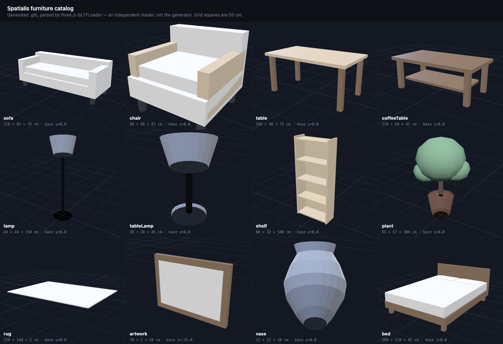
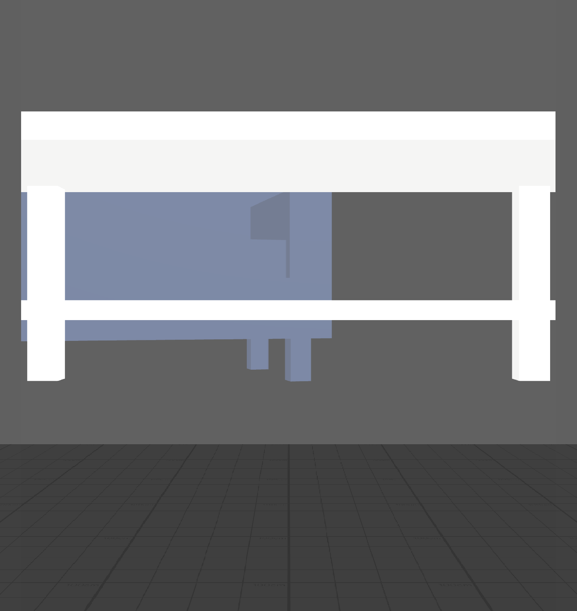

Spatialis is an interior design tool for Snap Spectacles. Stand in your room, say “add a marble coffee table”, and it appears at true scale on your real floor. Restyle it by voice. Move and resize it by pinch.
Real speech is “uh, put a like, dark wood coffee table over there”. The parser scans the whole sentence for a verb, a noun, a finish, a colour and a placement, then acts on whatever it found - no fixed phrasing required. Below: what you might say, and what the parser pulled out of it - the piece, its finish or colour, and where it goes.
Four subsystems, each doing one job, sharing one registry of what is in the room; the voice and gesture controllers call into the anchor engine and material swapper through inputs wired in Lens Studio.
Speech recognition transcribes what you say. You see the words as they arrive, but only the finished sentence is acted on - and the recogniser's habit of sending the same result twice is filtered out.
Spectacles' World Query scans the real room and reports the surface you are looking at. Its height above the estimated floor is what tells a table apart from the floor.
Each piece gets its own copy of its material, then colour, shine and roughness blend together into the new finish.
Pinch to drag, two hands to scale and rotate. Release hands it back to the anchor engine to settle.
About 3,300 lines of TypeScript, type-checked under strict, with nearly 2,900 lines of behavioural tests behind them.
Turns a spoken sentence into an intent, then drives the other three.
Finds real surfaces and seats furniture flush against them.
11 physically based (PBR) finishes and 10 tints, applied to one piece without repainting the rest of the room.
Spectacles Interaction Kit (SIK) hand tracking for pinch, drag, rotate and two-hand scale.
Made for this project rather than downloaded, because placing furniture correctly depends on two things stock models rarely have: a pivot at the base (wall art at its centre) - a centre pivot on a floor piece sinks it halfway into the floor - and true centimetre scale. All twelve total 1,786 triangles, with no textures.

The app you just launched runs in a browser - so it matters exactly which parts are the shipped Lens code and which are scaffolding standing in for hardware.
The shipped Scripts/*.ts files themselves, compiled for the browser and connected exactly as Lens Studio would connect them. Not reimplementations.
VoiceCommandController - parse, execute, spawn animation, debounce, feedbackSurfaceAnchorEngine - probe queue, floor calibration, classify, retry, overlap, wall-adjacent, reseatPBRMaterialSwapper - clone-once, cross-fade, guarded uniform writesFURNITURE_CATALOG, SpatialisRegistry, the tween system.glb models the Lens loads (centimetre-authored here; the Lens imports the metre-authored copies)Stands in for hardware the browser doesn’t have. Replaced on device.
Spatialis is a Closed Loop Agentic Development project: prompt, generate, verify against something the agent cannot talk its way past, fix, repeat. Six sessions from 31 Aug to 5 Sep 2026, every prompt and outcome in the transcript, including the places the agent was wrong and said so.
A written spec named the four subsystems and the demo script. Claude Code designed the shared registry, the parser, the anchor engine, the material swapper and the gesture state machine from it.
About 3,300 lines of TypeScript, 161 behavioural tests, twelve furniture models generated to scale, the browser simulator, and the Lens Studio project itself.
A type check against Snap’s real Lens Studio API, tests on every push, and the scene wired through Lens Studio’s MCP server with every input read back. Then the Lens was run in Preview and the runtime log read.
A 100× import scale that hid the sofa, glTF material names the swapper didn’t know, a float distance that filled the view, a retry ray aimed below the floor, and “on the table” landing on the floor. Each found by running, fixed, and re-run.
The app you can launch above is the browser simulator - it hosts the shipped
subsystems against a simulated room so anyone can try Spatialis without hardware.
The Lens is the same Scripts/*.ts files running inside Lens Studio
for Spectacles. npm run sync:lens keeps the Lens project’s copy identical
to the source; nothing is forked.
For judges and for anyone without a headset.
LensProject/ - a Lens Studio project set to the Spectacles target. The scene was wired by Claude Code through Lens Studio’s MCP server (Tools/lens-editor/wire-spatialis.ts), every input verified by read-back, then run in the editor’s Preview.
LensProject/LensProject.esproj in Lens Studio 5.23.2 or later (the version it was built and run in), sign in to My Lenses, press in Preview
No Lens Studio, no headset, no account.
# clone and verify $ git clone https://github.com/mrnetwork0001/Spatialis.git && cd Spatialis $ npm install $ npm run typecheck # strict type check of all four subsystems $ npm test # 161 behavioural tests # launch this page and the app $ npm run sim # builds the bundle, serves on :8777